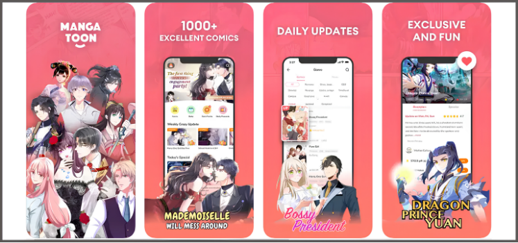

Đọc truyện trên điện thoại, chuyển từ màn hình sang sách giấy hay sẵn sàng trả phí chỉ để biết chương tiếp theo có gì? Những khảo sát mới trong năm 2026 cho thấy cách độc giả tiếp cận manga và webtoon đang đa dạng hơn. Cùng Góc Comic khám phá 5 điểm đáng chú ý về thói quen đọc truyện trong thời đại số.
1. Đọc truyện dọc đang trở thành một thói quen giải trí toàn cầu
Webtoon được thiết kế để đọc bằng cách cuộn dọc trên điện thoại, giúp độc giả theo dõi câu chuyện mà không cần thao tác lật trang như manga truyền thống.
Trong nghiên cứu công bố ngày 21/9/2026, WEBTOON Entertainment và National Research Group cho biết định dạng webcomic đã trở thành thói quen toàn cầu của khoảng 155 triệu người dùng. Báo cáo cũng nhấn mạnh khả năng giữ sự tập trung của người đọc khi họ bước vào thế giới truyện.
Điều thú vị là thao tác cuộn vốn quen thuộc trên mạng xã hội có thể mang đến trải nghiệm hoàn toàn khác khi được dùng để theo dõi một câu chuyện có nhân vật, tình tiết và diễn biến liên tục.
2. Độc giả không nhất thiết phải chọn giữa truyện giấy và truyện số
Sự phát triển của nền tảng trực tuyến không đồng nghĩa sách giấy biến mất khỏi thói quen đọc.
Theo khảo sát của Oricon công bố ngày 1/10/2026 với 8.668 người sử dụng dịch vụ truyện tranh điện tử tại Nhật Bản, khoảng 6/10 người dùng truyện số cũng đọc manga bản giấy. Trong khi đó, nhóm chỉ đọc hoàn toàn bằng định dạng điện tử chiếm 15,9%.
Những con số này cho thấy hai hình thức có thể bổ sung cho nhau. Độc giả có thể đọc chương mới trên điện thoại khi di chuyển, sau đó mua bản in của tác phẩm yêu thích để sưu tầm hoặc đọc lại.
Với các nhà xuất bản, việc phát triển cả hai định dạng cũng giúp tiếp cận những nhóm độc giả có nhu cầu khác nhau.
3. Đọc miễn phí vẫn là điểm bắt đầu quen thuộc
Một trong những lợi thế của nền tảng truyện số là khả năng tiếp cận nội dung mà không cần mua ngay cả bộ truyện.
Khảo sát Oricon cho thấy khoảng 6/10 người tham gia sử dụng dịch vụ truyện tranh điện tử theo hình thức miễn phí. Các cơ chế như chờ để mở chương, sử dụng vé đọc hoặc nhận lượt đọc theo thời gian là những hình thức phổ biến của thị trường này.

Tuy nhiên, miễn phí không phải lúc nào cũng đồng nghĩa với việc có thể đọc toàn bộ tác phẩm không giới hạn. Mỗi nền tảng có thể áp dụng điều kiện khác nhau về số chương, thời gian mở khóa và quyền truy cập.
Với độc giả, đọc thử là cách hợp lý để tìm được bộ truyện hợp gu trước khi quyết định mua bản đầy đủ.
4. Một chương truyện hấp dẫn có thể khiến độc giả sẵn sàng trả phí
Theo khảo sát Oricon, trong nhóm người dùng thường đọc miễn phí, lý do phổ biến nhất khiến họ quyết định trả tiền là muốn biết phần tiếp theo của câu chuyện sau khi đã đọc hết nội dung được mở miễn phí.
Điều này cho thấy sức hút của một bộ truyện không chỉ nằm ở chương mở đầu. Nhịp kể chuyện, sự phát triển của nhân vật và cách tác giả xây dựng nút thắt có thể quyết định việc độc giả tiếp tục theo dõi hay rời bỏ tác phẩm.
Đối với người sáng tác, đây cũng là lời nhắc rằng việc tạo ra những tình tiết gây tò mò cần đi cùng chất lượng nội dung ổn định. Một cú twist bất ngờ có thể giữ chân người đọc trong chốc lát, nhưng câu chuyện đủ hấp dẫn mới khiến họ quay lại lâu dài.
5. Manga và webtoon ngày càng gắn với văn hóa fandom
Đọc truyện ngày nay không chỉ dừng lại ở việc theo dõi nội dung. Nhiều độc giả còn tham gia thảo luận, chia sẻ giả thuyết, sáng tạo fanart và kết nối với cộng đồng có cùng sở thích.
Nghiên cứu của WEBTOON Entertainment và National Research Group cũng đề cập đến mối liên hệ giữa webcomic, fandom và việc đưa các câu chuyện sang nhiều hình thức giải trí khác nhau.
Với độc giả trẻ, một bộ truyện có thể trở thành điểm khởi đầu cho nhiều hoạt động: tìm hiểu tác giả, tham gia cộng đồng, sáng tạo nội dung hoặc khám phá các tác phẩm cùng thể loại.
Đây cũng là lý do những cộng đồng manga và webtoon có thể tiếp tục phát triển ngay cả khi độc giả đã đọc xong một bộ truyện. Điều họ tìm kiếm không chỉ là nội dung mới, mà còn là cơ hội chia sẻ cảm xúc và góc nhìn với những người cùng yêu thích tác phẩm.
Từ cách đọc dọc trên điện thoại đến việc kết hợp truyện số với sách giấy, thói quen đọc manga và webtoon năm 2026 phản ánh một thị trường đang thích nghi với nhiều nhu cầu khác nhau.
Dù lựa chọn hình thức nào, độc giả vẫn cần một câu chuyện đủ sức hấp dẫn để tiếp tục theo dõi. Còn với người sáng tác và nhà xuất bản, hiểu độc giả đang đọc như thế nào có thể là bước quan trọng để xây dựng những trải nghiệm đọc phù hợp hơn.